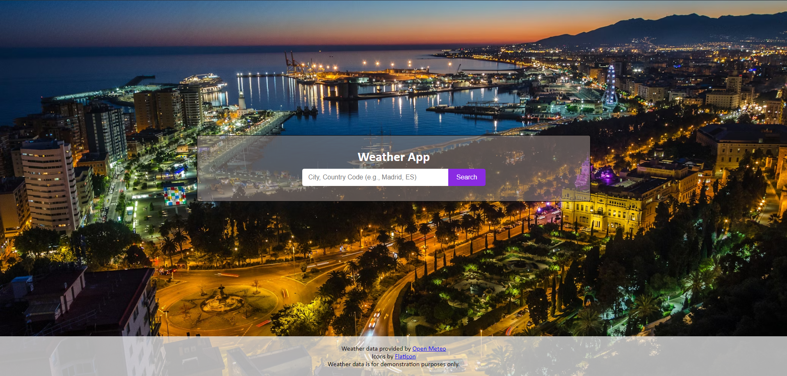
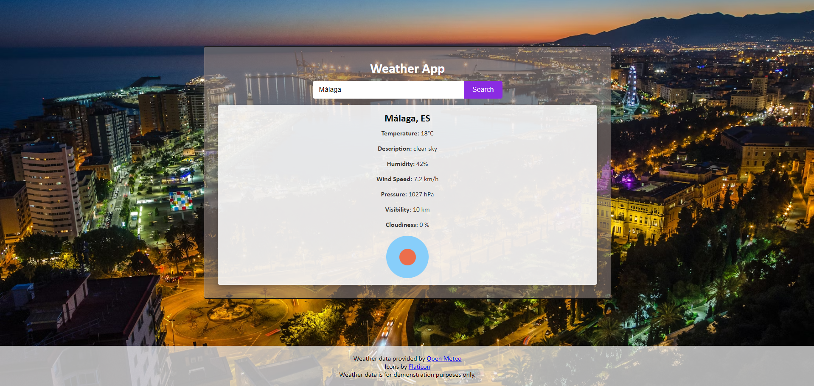

Weather App
Aplicación web que permite consultar el estado del tiempo en tiempo real de cualquier ciudad del mundo. Desarrollada con HTML, CSS y JavaScript, consume una API meteorológica externa para obtener datos actualizados al momento.
Tecnologías utilizadas
- HTML5 y CSS3 – Estructura y estilos de la interfaz
- JavaScript (ES6+) – Lógica y consumo de la API
- API meteorológica externa – Fuente de datos climáticos en tiempo real
Funcionalidades
Búsqueda por ciudad
La pantalla principal presenta un buscador donde el usuario puede introducir el nombre de cualquier ciudad del mundo para consultar su clima actual de forma inmediata.

Datos meteorológicos detallados
Tras realizar la búsqueda, la aplicación muestra una tarjeta con los datos climáticos más relevantes de la ciudad seleccionada:
- Temperatura actual
- Humedad relativa
- Velocidad del viento
- Presión atmosférica
- Icono representativo del estado del cielo
